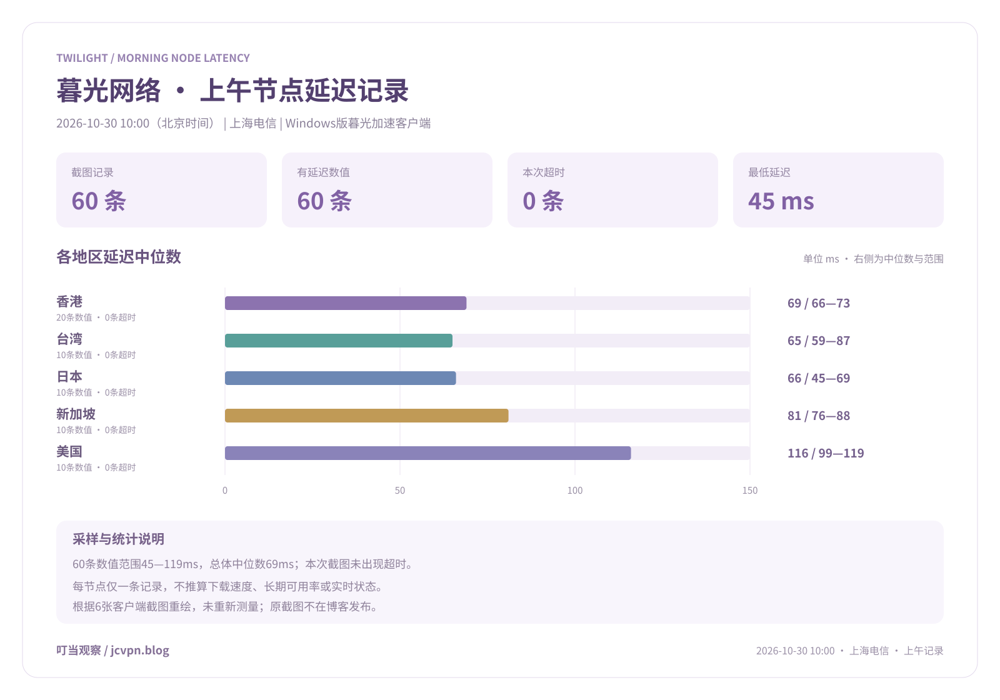

暮光·年付轻量版
¥109.00/年
年付折合约 ¥9.08/月
每30天额度70GB
购买日起每30天刷新
适合每期用量较少、希望按年控制预算的用户。
109元按年支付，折合约9.08元/月。70GB是每30天刷新的额度，并非全年总额度。
查看套餐入口IPLC专线与原生IP，面向多端日常。
暮光网络以IPLC专线与原生IP线路为服务方向，面向流媒体观看、AI工具访问和多设备在线使用等需求。资料列明单节点峰值最高2.5Gbps，不限制同时使用客户端数量，并提供多个国家及地区的节点选择与客服支持。
服务资料由博客站长提供 · 整理日期：2026-10-30
5款周期套餐、3款不限时流量包与1款独享定制，分别看清每期额度和一次性总额度。
全部套餐 · 共9款
¥109.00/年
年付折合约 ¥9.08/月
购买日起每30天刷新
适合每期用量较少、希望按年控制预算的用户。
109元按年支付，折合约9.08元/月。70GB是每30天刷新的额度，并非全年总额度。
查看套餐入口¥20.00/月
每月额度 · 按图示月价
具体刷新日期请核对后台
适合日常浏览、社交、短视频及适量流媒体使用。
每月120GB，资料列明BGP多线路调度与专线出口，适合从轻量年度预算转向月付使用的需求。
查看套餐入口¥40.00/月
每月额度 · 按图示月价
具体刷新日期请核对后台
适合日常办公、网页浏览与中等频率的视频观看。
标准版月度额度已由站长确认采用240GB。资料说明BGP三网优化与专线出口，可按实际月度用量比较。
查看套餐入口¥100.00/月
每月额度 · 按图示月价
具体刷新日期请核对后台
适合较高频率的视频、下载及远程办公使用。
每月700GB，资料列明BGP多线路调度与专线出口，面向多终端和较高流量需求。
查看套餐入口¥180.00/月
每月额度 · 按图示月价
具体刷新日期请核对后台
面向月度用量较大、长时间在线或多设备同时使用的场景。
1500GB是每月流量额度，图示为1.5TB。资料列明智能路由与专线出口，可先核对历史用量再选择。
查看套餐入口¥219.00/一次性
一次购买 · 用完为止
不按周期自动重置
适合用量不固定、长期出差或备用连接需求。
单次购买获得150GB总流量，按累计消耗使用；不是每月新增150GB。
查看套餐入口¥529.00/一次性
一次购买 · 用完为止
不按周期自动重置
适合希望保留较充裕总流量、使用频率随阶段变化的用户。
单次购买获得400GB总流量，按实际消耗扣减，不因月份增加而自动补充。
查看套餐入口¥959.00/一次性
一次购买 · 用完为止
不按周期自动重置
适合总流量需求较大、希望按累计用量安排预算的场景。
单次购买获得800GB总流量，与月度额度分别比较；额度用完后不会按月自动恢复。
查看套餐入口¥680.00/月
独立公网IP · 独立带宽
部署与刷新方式通过工单确认
面向独立部署、TikTok直播、跨境业务及其他定制需求。
图示680元/月，提供500GB月度独享流量、独立带宽资源与独立公网IP；该定制方案的资源不与他人共享。
资料列明下单后2—3个工作日完成交付，具体部署及进度通过工单确认。
前往了解定制方案年付轻量版109元按年支付，从购买日起每30天刷新70GB；四款月付分别对应120GB、240GB、700GB和1500GB。标准版额度已由站长确认采用240GB。
三款不限时流量包按累计消耗扣减，分别为150GB、400GB和800GB总额度，不自动按月补充。独享定制提供独立带宽与独立公网IP，图示每月500GB，资料列明2—3个工作日交付。
四款月付资料提到BGP优化、Shadowsocks方案及流媒体与AI工具使用方向；年付、一次性和定制方案按各自说明整理。实际速率和平台访问结果需要对应条件下的记录。
周期额度与不限时总额度分开列明，避免只比较GB数字。
| 套餐 | 图示价格 | 流量额度 | 刷新方式 |
|---|---|---|---|
| 暮光·年付轻量版 | ¥109.00/年 | 70GB · 每30天额度 | 购买日起每30天 |
| 暮光·基础版 | ¥20.00/月 | 120GB · 每月额度 | 具体日期核对后台 |
| 暮光·标准版 | ¥40.00/月 | 240GB · 每月额度 | 具体日期核对后台 |
| 暮光·旗舰版 | ¥100.00/月 | 700GB · 每月额度 | 具体日期核对后台 |
| 暮光·至尊版 | ¥180.00/月 | 1,500GB · 每月额度 | 具体日期核对后台 |
| 暮光·不限时轻量包 | ¥219.00/一次性 | 150GB · 一次性总额度 | 不自动重置 |
| 暮光·不限时标准包 | ¥529.00/一次性 | 400GB · 一次性总额度 | 不自动重置 |
| 暮光·不限时大容量包 | ¥959.00/一次性 | 800GB · 一次性总额度 | 不自动重置 |
| 独享私人定制节点 | ¥680.00/月 | 500GB · 每月独享流量 | 工单确认 |
价格与额度依据站长提供的套餐截图和确认记录整理，实际在售与配置请核对官网。下载完整套餐表 CSV ↓
每30天用量较少，可比较年付轻量版；偏好月付或需要更多额度时，再比较120GB至1500GB四个档位。9.08元是年付月均成本，实际一次支付109元。
不限时流量包适合按实际总消耗安排预算。150GB、400GB、800GB都是单次购买获得的总量，月份增加不会自动补充流量。
有独立公网IP、独立带宽或部署需求，可通过工单了解私人定制节点，并确认交付配置与进度。普通套餐与独享定制分别核对。
2026-10-30 10:00（北京时间） · 上海电信 · Windows版暮光加速客户端
60条均有数值，范围45—119ms，总体中位数69ms。香港20条，台湾、日本、新加坡、美国各10条。
每节点仅一条截图记录，0条超时只描述本次展示结果。本图不推算下载速度、长期可用率或实时状态，与前一晚的ChatGPT问答反馈分别记录。
78ms
99ms
104ms
80ms
76ms
116ms
84ms
119ms
102ms
101ms
82ms
79ms
80ms
86ms
83ms
88ms
68ms
69ms
66ms
66ms
116ms
119ms
119ms
118ms
70ms
69ms
69ms
67ms
71ms
72ms
68ms
66ms
71ms
69ms
69ms
70ms
69ms
69ms
73ms
69ms
71ms
68ms
87ms
66ms
66ms
45ms
66ms
50ms
46ms
66ms
60ms
66ms
69ms
65ms
64ms
65ms
59ms
65ms
65ms
67ms
本组在这批记录中没有符合当前筛选条件的节点。
共60条记录

原截图只作整理依据，不作为博客图片发布。完整数据保留原名；图表按这批数值重绘，未重新测量。
三端均从暮光官网首页下载。打开对应系统的客户端，使用官网账号登录，选择节点后点击连接。
打开对应系统的暮光加速，使用官网账号登录。
登录后选择需要使用的节点。
选好节点后点击连接，开始使用。
iOS使用Nextin应用。先填写品牌识别码：mgjs，再使用官网账号登录，选择节点后点击连接。
按需要补充流量、延长有效期或调整套餐，分别核对金额、起算日和可用额度。
周期套餐的流量用完后，可购买与所购套餐同价的流量重置包；购买后立即恢复该套餐的完整流量额度。
周期套餐提前续费后，只延长套餐有效期，不会立即补充流量；流量仍按原来的刷新时间更新。
升级周期套餐时，先支付新套餐全价，付款后由平台退回原套餐的差价。升级成功当天作为新套餐起算日，重新计算所选套餐周期；可用流量按新套餐额度减去本周期已用流量计算。
登录暮光官网后台联系客服，说明遇到的使用问题。
因技术问题，经客服协助后仍完全无法使用，可申请全额退款。退款申请须在购买后24小时内提出，登录暮光官网后台联系客服办理。
从网络规格到客户端数量，按提供的服务介绍逐项整理。
资料以低延迟的跨地区连接为服务方向，列明单节点峰值最高2.5Gbps。峰值规格与用户实际下载速度分别记录。
提供原生IP线路，服务介绍覆盖流媒体、AI工具与短视频平台等使用场景。IP具体属性按对应节点与套餐说明核对。
不限制同时使用客户端数量，支持不同设备在线使用。Windows、macOS和安卓均使用暮光加速，从官网首页下载，使用官网账号登录后，选择节点并点击连接。
登录暮光官网后台联系客服，协助处理使用问题并申请符合条件的退款。私人定制需求通过工单沟通，响应时限按实际客服安排。
本次服务资料列出15个地区。以下7个地区提供具体节点数量。
其余8个地区未提供数量，不补造节点数。以上为资料中的地区分布，具体可用节点以后台当时显示为准。
以下平台来自站长提供的服务说明。
平台支持说明与实际使用记录分别整理；下方已列出2026-10-29 23:00上海电信、新加坡节点的ChatGPT问答反馈；其他平台尚待对应记录。
上海电信网络，连接新加坡节点。按站长提供的实际使用反馈整理。
能够正常发送问题，并收到回答。
本次反馈仅覆盖上述条件下的ChatGPT问答；其他节点、时段和功能应分别记录。
站长提供的服务介绍说明采用全IPLC专线。本页据此整理线路方向，实际连接表现需结合所在地、运营商、节点与时段记录。
2.5Gbps是资料列明的单节点峰值规格，描述服务提供的网络规格，不等于每位用户在任意时段持续获得的下载速度。实际速度需要在具体条件下另行测量。
本次资料列明香港20个、台湾10个、日本10个、新加坡10个、美国10个、韩国2个、阿根廷2个；另外包括马来西亚、越南、菲律宾、泰国、印度、德国、法国、英国等地区。后8个地区没有提供节点数量，按名称保留，具体可用节点以后台当时显示为准。
资料说明不限制同时使用客户端数量，支持多设备在线。Windows、macOS和安卓客户端均为暮光加速，支持从官网首页下载；iOS使用Nextin，登录前填写识别码mgjs。
Windows、macOS和安卓客户端均为暮光加速，可从暮光官网首页直接下载。打开客户端，使用官网账号登录后，选择需要的节点，再点击连接。版本和系统要求按官方指引核对。
iOS使用Nextin应用，先填写品牌识别码mgjs，再使用官网账号登录，选择节点后点击连接。iOS下载入口与版本要求以官方指引为准。
因技术问题，经客服协助后仍完全无法使用，可申请全额退款。退款申请须在购买后24小时内提出，登录暮光官网后台联系客服办理。
站长提供的服务介绍列明Netflix、Disney+、ChatGPT与TikTok等平台。这里记录服务说明，本页另列上海电信网络、新加坡节点下的ChatGPT问答反馈，时间为2026-10-29 23:00；其余平台按服务说明列示。
品牌基础资料说明原生IP线路；独享私人定制节点另行列明独立公网IP与独立带宽，不与他人共享。普通套餐与独享定制分别核对，本次没有确认住宅IP属性。
根据站长提供的实际使用反馈，2026-10-29 23:00（北京时间），在上海使用电信网络，连接暮光网络新加坡节点，ChatGPT能够正常发送问题，并收到回答。另有2026-10-30 10:00上海电信、Windows版暮光加速客户端的60条节点延迟记录。尚未提供下载或上传速度数据。
本页整理9款：年付轻量版109元/年、70GB/30天；基础版20元/月、120GB；标准版40元/月、240GB；旗舰版100元/月、700GB；至尊版180元/月、1500GB。另有219元/150GB、529元/400GB、959元/800GB的一次性不限时流量包，以及680元/月、500GB的独享私人定制节点。
不是。资料写明购买日起算，每30天自动刷新70GB。109元是年付金额，折合约9.08元/月；月均成本用于比较，实际按年支付。
图片上方标240GB、详情文字标300GB，站长已明确确认采用240GB/月，本页与价格表均按240GB整理。
不会。三款分别是150GB、400GB和800GB一次性总流量，无流量到期限制，用完为止，不按周期自动重置。
年付轻量版明确写明购买日起每30天自动刷新。其余四款按每月额度介绍，截图未列具体刷新日期，使用前请核对后台。
周期套餐的流量用完后，可购买与所购套餐同价的流量重置包；购买后立即恢复该套餐的完整流量额度。
周期套餐提前续费后，只延长套餐有效期，不会立即补充流量；流量仍按原来的刷新时间更新。
升级周期套餐时，先支付新套餐全价，付款后由平台退回原套餐的差价。升级成功当天作为新套餐起算日，重新计算所选套餐周期；可用流量按新套餐额度减去本周期已用流量计算。
图示680元/月、每月500GB独享流量，提供独立带宽资源与独立公网IP，不与他人共享。面向独立部署、TikTok直播及跨境业务，定制需求通过工单沟通。
资料列明下单后2—3个工作日完成交付，由专人技术维护。具体部署内容与进度通过暮光工单系统确认。
Shadowsocks是协议或连接方案名称，不能直接当作软件名称。基础、标准、旗舰、至尊四款的截图提到该方案，各平台客户端及具体使用流程需要对应指引。
4K、8K播放属于套餐资料中的使用方向，尚无对应播放或速度数据。ChatGPT另有2026-10-29 23:00上海电信、新加坡节点的成功问答反馈；不由此推断视频播放、API、付费功能或其他平台表现。
根据站长提供的实际使用反馈，2026-10-29 23:00（北京时间），在上海使用电信网络，连接暮光网络新加坡节点，ChatGPT能够正常发送问题，并收到回答。本次记录对应上述条件下的问答操作。
有。本页整理2026-10-30 10:00（北京时间）、上海电信、Windows版暮光加速客户端的6张截图，共60条延迟数值，范围45—119ms，中位数69ms。这是上午记录。
没有。这批60条记录均显示数值，0条超时。这里只描述本次截图，不据此推断长期零超时、完整节点在线率或其他网络的表现。
不能。ms是客户端显示的延迟，不能换算成Mbps或下载速率。图表按这批截图整理，不会自动重新检测；每节点只有一次记录。
为方便阅读，页面标签统一使用两位节点编号。截图原名分别保存在完整JSON和CSV数据中，不合并不同节点，也不修改延迟数值。
本页依据博客站长提供并确认的暮光网络服务介绍与节点地区资料整理，日期为2026-10-30；套餐部分另据站长提供的3张套餐截图与标准版240GB流量确认记录整理。内容涵盖IPLC线路、单节点峰值规格、原生IP、多设备并发、客服服务方向与节点地区。
Windows、macOS和安卓的客户端名称、官网下载方式与连接流程已由站长确认。iOS使用Nextin，填写识别码mgjs后，使用官网账号登录、选择节点并点击连接。周期套餐的同价重置、提前续费与升级收费、周期和流量计算规则也已由站长确认。技术问题全额退款的适用条件、购买后24小时内的申请期限和官网后台客服入口也已确认。本页另收录2026-10-29 23:00上海电信、新加坡节点的ChatGPT实际问答反馈。iOS下载入口、优惠码、其他售后细则、Logo、其他平台使用记录及下载速度数据，将按后续资料补充。另已整理2026-10-30 10:00上海电信、Windows版暮光加速客户端的60条节点延迟记录，原截图不发布。入口保留站长提供的原推广参数。